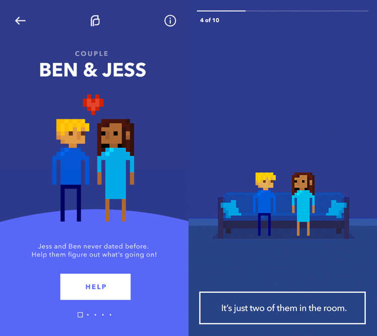
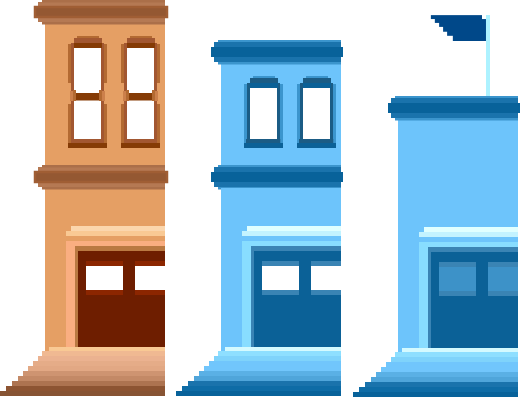
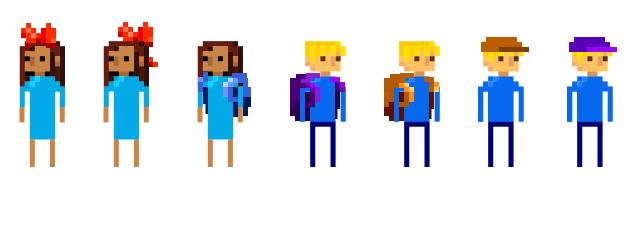
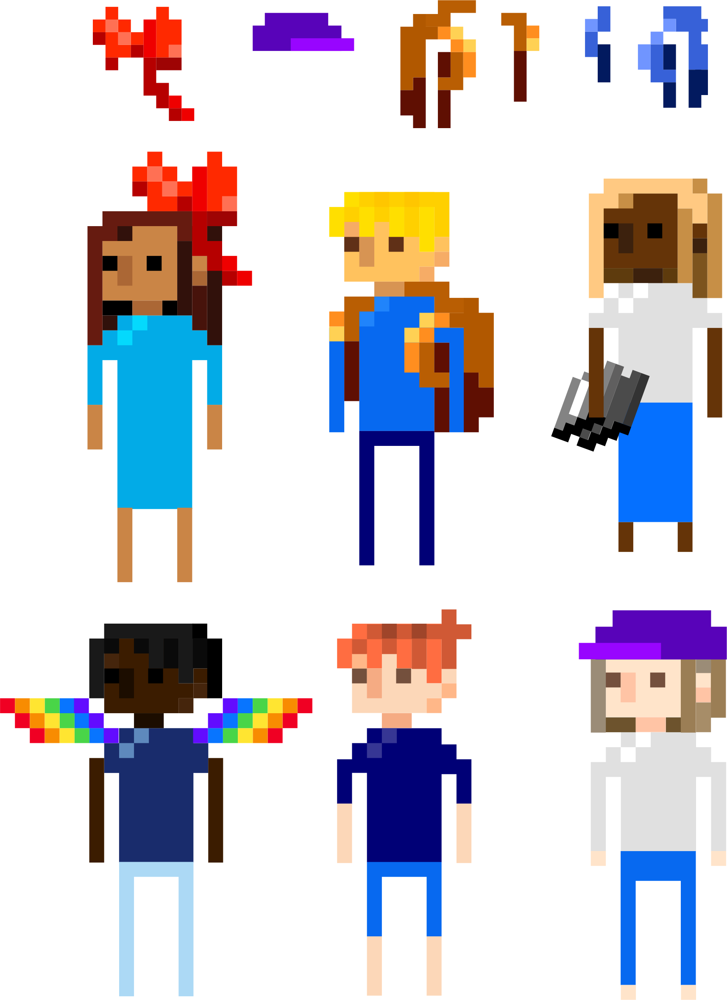

Work&Co
User experience & visual design
The aim of this project for Planned Parenthood was to create a digital experience for teens that provides insight into sexual and reproductive health.

Time
Six weeks
Target audience
Teens from low-income backgrounds
Format
Web based, mobile first
Requirements
One important aspect was to take advantage of the vast amount of pre-existing content from Planned Parenthood. It should be repackaged in a way that remains current for a long time and requires minimal maintenance.
A chatbot would most effectively fulfill all these requirements.
Research showed that teenagers remember information most accurately if they process it at a heightened emotional state. Therefore we also came up with two game based ideas.
Concept by design lead

Visuals
The visual design lead came up with the style of an 8bit game. I created backgrounds and character variations to fit under the predefined styleguide.
I tried to come up with characters that fit within the defined colour scheme of the brand guidelines and reflected a range of different ethnic groups.
Brand guidelines
Scene variations by me


Prototyping
Following the flow designed the UX lead of the team I created a prototype of the game.
"Happy Place" is a scenario based role-playing game. An example would be to help a friend deal with their first crush. The user is presented with questions and multiple answers.
Icon variations by me


Choose your adventure
1: Help two people get together.
2: Help someone come out.
3: Help someone without any sexual experience.

Choose your environment
1: School
2: Diner
3: Space

Choose your avatar
1: Create random
2: Customise hair, clothes and skin

Answer questions
Do your best to advise the characters in the game. Get feedback from Planned Parenthood based on your actions.

Reflection
I learned how to prototype products not just with a focus on structural clarity but also with an emphasis on motion and hierarchy through type, colour and layout.
It has become apparent to me how small details can evoke moments of joy for the user. It is something I hope to integrate in all my future work.